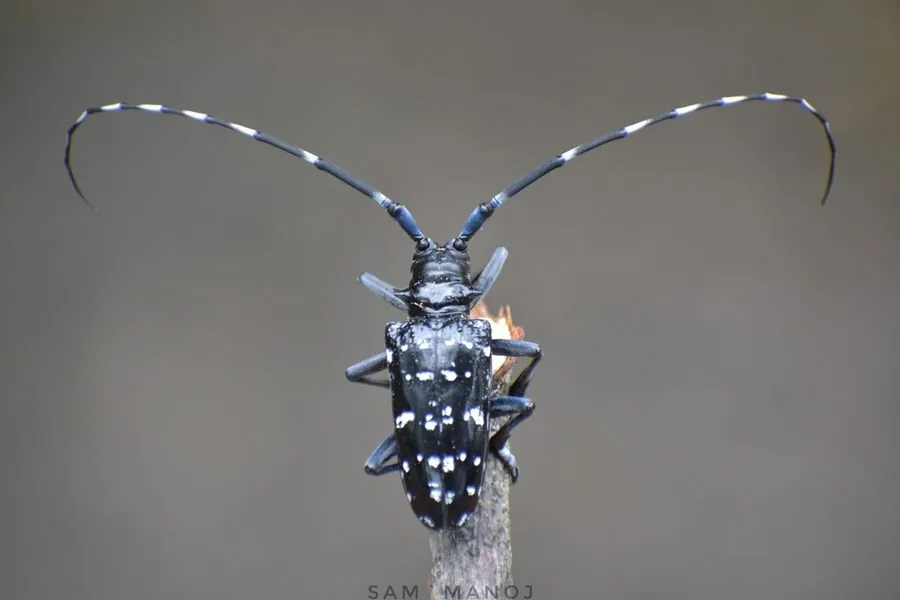

昆虫 · 动物界
星天牛 Anoplophora chinensis

鞘翅上布满白色星斑的大型天牛，幼虫蛀食树干木质部，是柑橘和园林树木的重要害虫，也是国际检疫性有害生物。
- 分类
- 门节肢动物门纲昆虫纲目鞘翅目科天牛科属星天牛属
- 栖息环境
- 柑橘园、林地与城市绿地，成虫在枝干上活动
- 地理分布
- 中国、日本、朝鲜半岛；已入侵欧洲和北美部分地区
- 保护级别
- 暂无评估；国际重要检疫性害虫
物种志
星天牛成虫体长约 2–4 cm，体黑色有光泽，鞘翅上散布不规则的白色斑点，像夜空中的星星，因此得名；触角极长，雄虫触角可接近体长的两倍，前胸背板两侧有刺状突起。
雌虫产卵时咬破树皮，把卵产在树干基部，幼虫孵化后蛀入木质部取食，形成弯曲蛀道，并把木屑和虫粪排出堆在树根附近，严重时导致树势衰弱甚至整株枯死。幼虫期约 1–2 年，成虫夏季羽化，取食嫩枝树皮。星天牛寄主包括柑橘、柳树、杨树和悬铃木等，原产中国、日本和朝鲜半岛，随苗木贸易传入欧洲和北美，被列为国际检疫性害虫。防治以严格检疫、清除虫源木、树干涂白和释放寄生蜂等天敌为主。
形态与习性
- 食性幼虫蛀食树干木质部；成虫啃食嫩枝树皮
- 体长约 2–4 cm，触角可达体长的 2 倍
- 生活史幼虫期约 1–2 年，成虫夏季出现
- 危害蛀道破坏输导组织，严重时整株枯死
- 寄主柑橘、柳树、杨树、悬铃木等
- 防治严格检疫，清除虫源木，释放寄生蜂等天敌
趣味知识
- 星天牛触角比身体长得多，雄虫触角甚至可接近体长的两倍。
- 幼虫在树干里蛀食一两年，排出的木屑和虫粪堆在树根附近。
- 星天牛随苗木贸易传入欧洲，被列为欧盟检疫性有害生物。